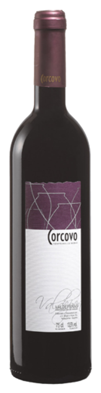
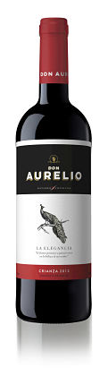
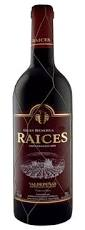
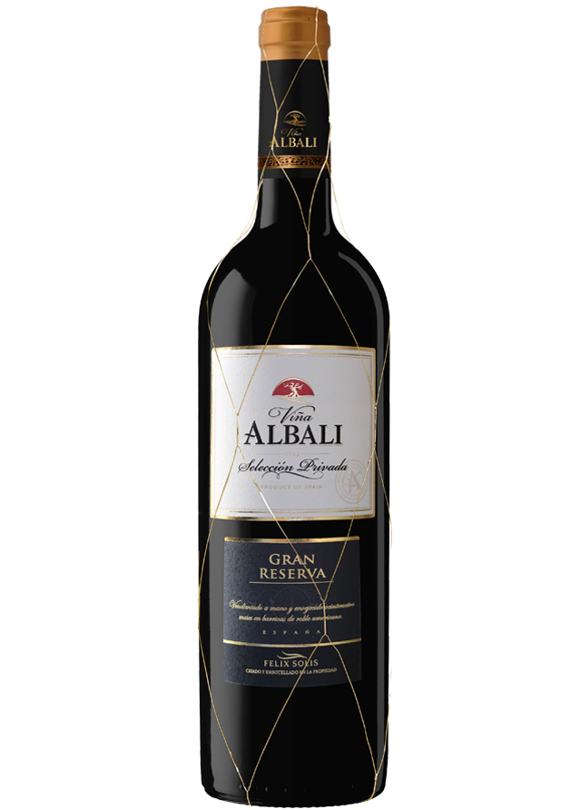
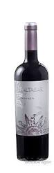

La Denominación de Origen Valdepeñas es una de las Instituciones Vitivinícolas más importantes de España. Actualmente es la segunda Denominación de Origen española en volumen de ventas y, la tercera en reconocimiento y penetración de marca. Son Vinos consolidados entre profesionales y consumidores tanto del territorio nacional como internacional.
La tradición de Valdepeñas es la historia de sus viñedos, de sus frutos y sus vinos, escrita con pasión por gentes dedicadas al cultivo de la vid desde tiempos ancestrales. Su tradición vinícola se remonta al tiempo de los íberos, hecho constatado tras el hallazgo de materiales orgánicos relacionados con la producción del vino en el yacimiento Ibérico del Cerro de las Cabezas (s. IV-VII a.c.).
La ciudad de Valdepeñas es una fundación castellana de 1232 por la reina Doña Berenguela, cuando toda la zona sur de la Mancha se consolida tras las Navas de Tolosa. Durante estos años Valdepeñas se convirtió en una importante área de producción. Cuando la corte del rey Felipe II se instala en Madrid (1561) se extiende la fama de la calidad del vino de Valdepeñas y desde ese momento entra a formar parte de la historia de la Villa. Allí se populariza su consumo de tal manera que los impuestos especiales sobre su comercio permiten al rey Carlos III, gran arquitecto de la capital, sufragar algunas de las obras más importantes de su reinado tales como la Puerta de Alcalá o la Puerta de Toledo.3 4 5 Ya en 1790 se habla de una producción anual de 200.000 arrobas de vino, pero es en el siglo XIX cuando su comercio queda establecido de una forma continuada.
En este sentido, la construcción del ferrocarril en 1861 supone un importante paso adelante. El 29 de enero de 1895 se concede a Valdepeñas el título de ciudad. Se establece entonces un tren especial con salida de Valdepeñas y destino Madrid, compuesto por más de 25 vagones, llamado Tren del Vino, porque ésta era la única mercancía que transportaba.
Estos años en que el vino de Valdepeñas era degustado por todo Madrid, fueron también los de las grandes exportaciones a Filipinas, Cuba y Centroamérica a través del Puerto de Cádiz.
La importancia de los vinos de Valdepeñas llevó al Ministerio de Fomento a crear la Estación Enológica y Campo de Experimentación y, en 1925, la Federación Regional de Viticultores. Tres años más tarde, se constituye el Círculo Mercantil Vitivinícola, con el objetivo de defender y promocionar los vinos de la zona.
En 1930 la Junta Regional Vitivinícola se establece en Valdepeñas. El 8 de septiembre de 1932, el Estatuto del Viñedo (primera ley que regulaba el sector vitivinícola español) recoge y reconoce la zona de producción de Valdepeñas. De esta forma la Denominación de Origen Valdepeñas es una de las primeras zonas de producción y elaboración protegidas de nuestro país.
|  |
Coecovo Roble.Variedad: 100% Tempranillo Alcohol: 14,00º Vol. Vinificación: Monovarietal tempranillo con estancia durante tres meses en barricas de roble americano, siendo éste su primer llenado. Nota de Cata: Vivo en intenso a la vista con toques malvas. Concentrado en la nariz con elegante carácter frutal y discretas pero finas notas de café y canela. En boca, amplio, amable, estructuradoy con fuerza. Elegante para tomar ahora y con buen futuro. Recomendaciones: Recomendado con quesos de media curación, asados y caza. Su temperatura óptima de servicio se encuentra entre 12 °C y 14 °C. | |
|  |
Don Aurelio Crianza.Variedad: 100% Tempranillo. Alcohol:13,00% Vol. NOTA DE CATA * Color: Rubí intenso * Nariz: Fruta en compota y madera noble * Boca: Elegantes notas de madera y fruta madura, matices de vainilla Recomendaciones: Acompaña bien a todo tipo de Carnes, guisos, patés y quesos. Su temperatura ideal de servicio se sitúa entre los 16 ºC y los 18 ºC. | |
|  |
Raíces.Categoría: Crianza Variedad: 100% Tempranillo Grado: 13,00% Vol. Ficha de cata: Período mínimo de envejecimiento de 24 meses, de los cuales 6 meses habrá permanecido en barrica de madera de roble de capacidad máxima de 330 litros. Granate borde cobrizo. Aroma con finas notas de reducción, toques varietales. Boca sabroso, especiado, madera fundida, final fresco y frutoso. Algo rústico. Recomendaciones gastronómicas: Ideal para acompañar carnes asadas y a la plancha. Temperatura óptima de servicio: 16 ºC - 18 ºC. | |
|  |
Viña Albali Gran Reserva.Inspirado por un cielo despejado y lleno de estrellas, Félix Solís quiso crear un vino que capturara el placer y el estilo de vida optimista de los españoles. Le puso el nombre de Viña Albali, en honor a una estrella de la constelación de Acuario. Viña Albali Gran Reserva Selección Privada se elabora a partir de uvas de la variedad tempranillo vendimiadas a mano de los viñedos propios de la familia Solís. Este vino pasa por un largo periodo de crianza en la quietud de nuestra sala de barricas. Variedad:Tempranillo. Estilo: Vino tranquilo. Región: Valdepeñas coge de su nombre de la histórica ciudad con el mismo nombre que yace en el valle del río Jabalón, con pequeñas formaciones rocosas (Val-de-peñas valle de las piedras). Ubicado en el sur de Castilla La Mancha en el centro de España, está prácticamente rodeada de la D.O Mancha y limita con Andalucía al sur. El clima es extremo, con temperaturas que alcanzan los 40º en verano y -10ºC en invierno. Nota de cata: Profundo color rubí con matices anaranjados, este vino tiene un aroma complejo y elegante con frutas rojas y toques de cuero, pimienta verde y especias. En boca es equilibrado y expresivo, redondo y con taninos pulidos. El vino tiene potencial de mejora en botella debido a su excelente estructura tánica. Maridaje: Acompaña a todos tipo de carnes, guisos y quesos curados. Graduación Alcohólica: 13º. Recomendación de servicio:Servir entre 18-20ºC. Se recomienda decantar o abrir la botella media hora antes de servir. Información técnica: La fermentación tiene lugar a temperatura controlada , en torno a 26-28ºC, con el objetivo de extraer el máximo potencial aromático y taninos elegantes. Posteriormente el vino envejece durante 18 meses en barricas de roble americano y entre 3 y 6 años en botella. Sobre este vino: “Notable por su intenso color rubí y tonos terracota. En nariz, es un verdadero placer por su elegancia y especias refinadas junto con cuero, junto con recuerdos a fruta madura. El verdadero placer viene en boca, donde es fácil reconocer los taninos pulidos que hacen de este vino un vino equilibrado, redondo y expresivo.” | |
|  |
Baltasar.Variedades: Tempranillo 100%. Clima y Tipo de suelo: Clima continental (veranos secos e inviernos fríos). Suelo de cantos rodados y pizarras. Zona montañosa con altitudes entre 800 y 1000 m. Detalles de viñedo: Viñedos de entre 35 y 50 años en vaso y con riego natural y una media de rendimiento de 3000 kg/ha Época de vendimia: La segunda y tercera semana de Octubre Detalles de fermentación: En depósitos de acero inoxidable durante 15 - 20 días a 24oC - 28oC Crianza en barrica: 10 meses en barricas americanas y francesas. PH y Acidez: 3,70 / 4,5 gr/l H2T% Alcohol en etiqueta: 14,5 % Vol. Azúcar residual: 0,9 grs/l Tipo de cierre: Corcho natural Peso caja y Paletización: 9,5 kg/ 76 cajas - 4 mantos Almacenaje y Ta de Servicio: 4 años / 18oC Cata: Color rojo intenso con matices violáceos. De buena intensidad olfativa, se aprecian notas de vainilla y tostado perfectamente ligadas con el aroma y sabor a frutos rojos maduros. Su cuerpo y buena concentración junto a un tanino maduro le dan al vino un paso de boca elegante y complejo apreciándose un postgusto equilibrado y persistente. |